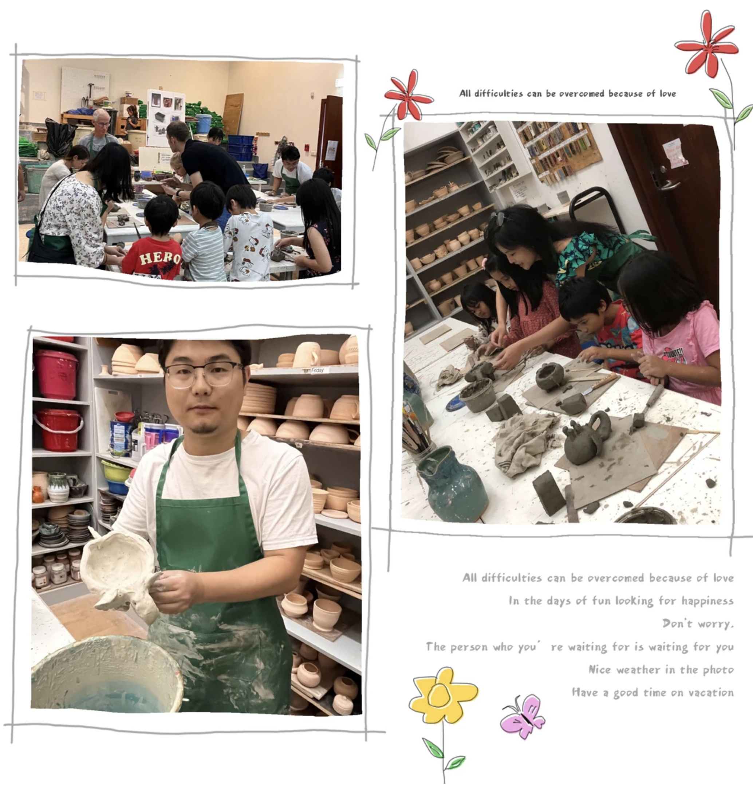

Daisy and I are working as Teaching Assistants (TAs) for KAUST school every Saturday morning (for 2 hours) regularly
Daisy Volunteers website share our stories regularly
The story was reported by THELENS - KAUST social channel
We took some rice plants from KAUST farm to transplant into the wooden barrels in the school garden. By breathing the fresh air and feeling the hilarity of planting, we help add a green healthy atmosphere to community life.

2022-now, I joined Daisy Volunteers in KAUST (non-profit organzation) to help building a better community (regularly)
2022-2023, Activity 1: Kids' Art
Daisy and I are working as Teaching Assistants (TAs) for KAUST school every Saturday morning (for 2 hours) regularly
Daisy Volunteers website share our stories regularly
The story was reported by THELENS - KAUST social channel